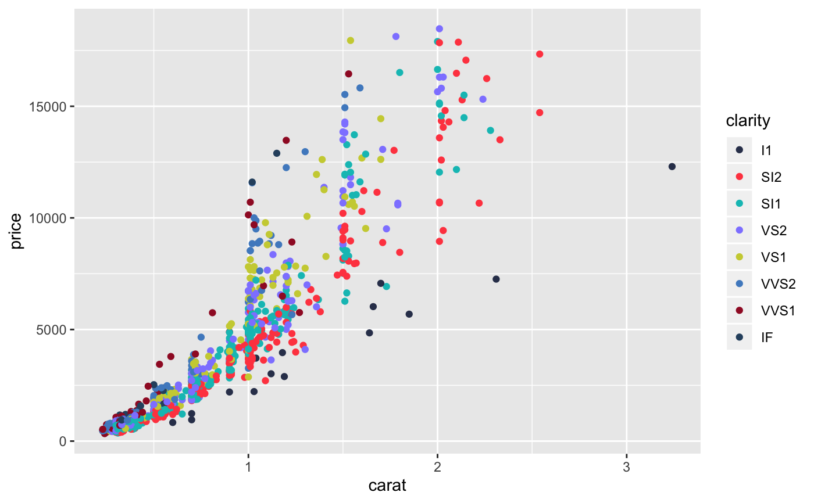

Colour scale constructor for Nightingale colours
scale_colour_ng_d(..., palette = "all", reverse = FALSE, aesthetics = "colour") scale_fill_ng_d(..., palette = "all", reverse = FALSE, aesthetics = "fill") scale_colour_ng_c(..., palette = "magma", reverse = FALSE, values = NULL, space = "Lab", na.value = "grey50", guide = "colourbar", aesthetics = "colour") scale_fill_ng_c(..., palette = "magma", reverse = FALSE, values = NULL, space = "Lab", na.value = "grey50", guide = "colourbar", aesthetics = "fill")
| ... | Additional arguments passed to
|
|---|---|
| palette | Character name of the Nightingale (or viridis) colour palette. |
| reverse | Boolean indicating whether the palette should be reversed. |
| aesthetics | Character string or vector of character strings listing the name(s) of the aesthetic(s) that this scale works with. This can be useful, for example, to apply colour settings to the `colour` and `fill` aesthetics at the same time, via `aesthetics = c("colour", "fill")`. |
| values | if colours should not be evenly positioned along the gradient
this vector gives the position (between 0 and 1) for each colour in the
|
| space | colour space in which to calculate gradient. Must be "Lab" - other values are deprecated. |
| na.value | Missing values will be replaced with this value. |
| guide | A function used to create a guide or its name. See
|
# Example taken from ggplot2::scale_colour_discrete() dsamp <- ggplot2::diamonds[sample(nrow(ggplot2::diamonds), 1000), ] d <- ggplot2::ggplot(dsamp, ggplot2::aes(carat, price)) + ggplot2::geom_point(ggplot2::aes(colour = clarity)) + ggforestplot::scale_colour_ng_d() print(d)